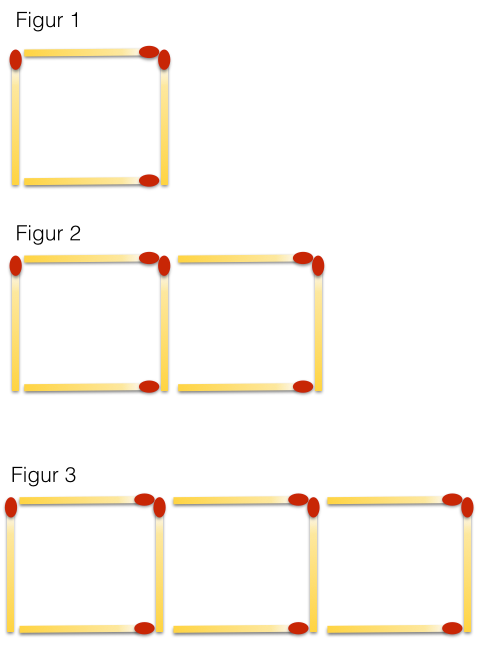
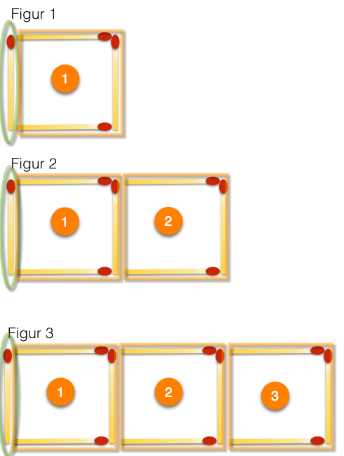

Figurer og variable størrelser
Contents
Figurer og variable størrelser¶
I matematikk er det viktig å kunne utforske og oppdage mønster og sammenhenger. I denne leksjonen skal du først se etter mønster i figurtall. Dette kan hjelpe deg å forstå hvordan bokstavregning kan være nyttig i generaliseringer og problemløsing. Du skal lære at vi kan regne med variabler på samme måte som vi regner med vanlige tall.
Eksempel 1¶
Nedenfor ser du de tre første figurene som er laget av fyrstikker.

Hvor mange fyrstikker er det i figur nummer 50?
Denne oppgaven vil vi at du skal bruke god tid på. Det er ikke sikkert at du får den til med en gang.
Løsning:
I figur 50 er det 151 fyrstikker. Det er flere måter å finne det på. En er å stille opp antall fyrstikker og figurnummer i en tabell
| Figurnummer |
Antall fyrstikker |
|---|---|
| 1 | 4 |
| 2 | 7 |
| 3 | 10 |
| 4 | 13 |
| 5 | 16 |
| 6 | 19 |
| 7 | 22 |
| 8 | 25 |
| 9 | 28 |
| 10 | 31 |
Med utgangspunkt i det som står i tabellen kan vi observere noen egenskaper som kan hjelpe oss til å finne svaret.
Når ved en fordobling av figurummeret vil antall fyrstikker være en mindre enn dobbelt så mye. Figur 2 har 7 fyrstikker. Figur 4 har 7·2-1=13 fyrstikker.
Figur 20 får da 2·31-1=61 fyrstikker.
Slik kan vi tenke oss fram til svaret.
En annen måte er å se at antallet øker med 3 per figur slik at tabellen blir slik
| Figurnummer | Antall fyrstikker |
|---|---|
| 1 | 4 |
| 2 | 4+3·1 |
| 3 | 4+3·2 |
| 4 | 4+3·3 |
| 5 | 4+3·4 |
| 6 | 4+3·5 |
| 7 | 4+3·6 |
| 8 | 4+3·7 |
| 9 | 4+3·8 |
| 10 | 4+3·9 |
Da kan vi finne antall fyrstikker i figur nummer 50 som: 4+3·49=151
Det fins sikkert flere framgangsmåter som alle er like riktige. Svaret skal uansett bli det samme: 151
Oppgave 1¶
I forrige oppgave fant vi ut hvor mange fyrstikker det var i figur nummer 50. Kan du finne et matematisk uttrykk som viser hvor mange fystikker det er i figurnummer n?
Klikk på knappen til høyre for å vise løsning!

\(F_n=1+3 \cdot n\)
Bildet ovenfor viser en måte å komme fram dette uttrykket. Hver figur består av én fyrstikk som er merket med grønt. Den første figuren har én samling med tre fyrstikker i tillegg. Den andre har to samlinger med tre fyrstikker. Den tredje har tre slike samlinger, og så videre. Hver av disse samlingene er markert med et oransje rektangel.
Kanskje kom du fram til denne formelen:
\(F_n=4+3 \cdot (n-1)\)
For å komme fram til den gjelder samme tankegang, men da starter vi med fire fyrstikker i den første og legger til samlinger med tre fyrstikker fra og med den andre figuren. Begge formlene er naturligvis riktige og ved litt regning kan vi se at de er like.
Some hidden toggle content!